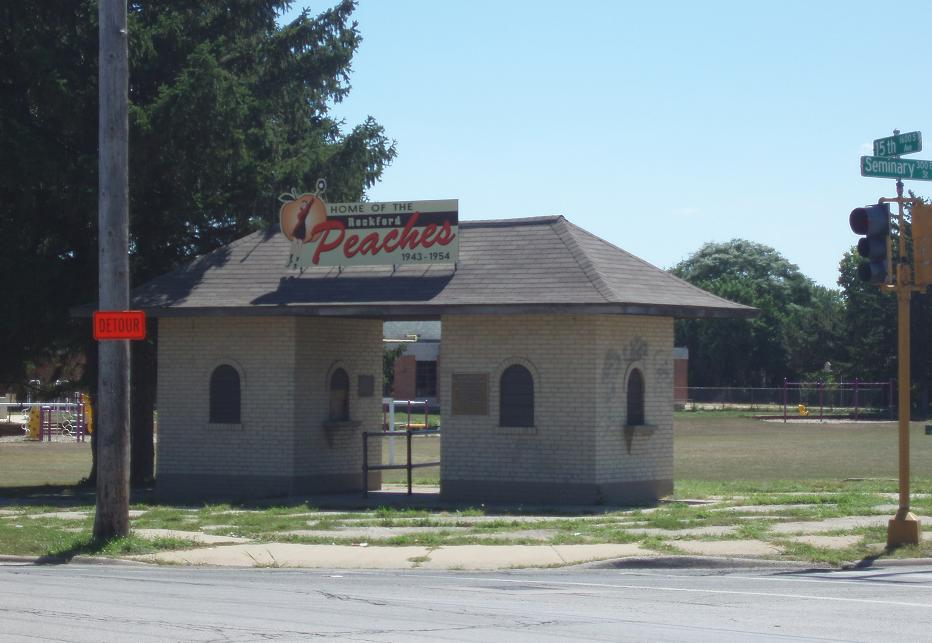

After her stint with the Bloomer Girls, Rose Gacioch continued to barnstorm on and off throughout the 1930s. In the early 1940s, Gacioch worked at a factory and read up about the new All American Girls Professional Baseball League. Through a connection at the factory, Gacioch was able to be hired onto the South Bend Blue Socks’ roster in 1944. She would play in the AAGPBL until its disbandment in 1955. During the off-seasons, Gacioch would work at a Chrysler factory in Detroit. Gacioch managed a mediocre rookie season hitting-wise, however at the time she held an outfielder’s league record 87 assists.
Gacioch was traded to the Rockford Peaches in 1945. With the Rockford Peaches, her batting average improved drastically, and she became known as a power-hitter. In addition, when the league switched to overhand pitching from underhand pitching in 1947, Gacioch became a pitcher, becoming so good that she made the 1951, 1952, 1953, and 1954 AAGPBL All-Star teams. Indeed, the switch was foreshadowed by Gacioch’s original listing as a pitcher for the All Star Rangers in the Bloomer Girls’ leagues, where it does not seem she was ever able to pitch officially. According to the All-American Girls Professional Baseball League Record Book compiled by W.C. Madden, Gacioch also managed to throw a no-hitter, and manage a 21-7 season, all while having 6 seasons with a Batting Average above .250.
All in all, Gacioch was quite old to be in the AAGPBL at 28 -- normally players were in their late teens and early twenties, and usually lied about their age if they were in their early twenties. However, Gacioch’s continued drive to play baseball by seeking out the opportunity wherever she worked most likely contributed to her having such a successful career. It’s tragic that she was not able to find an outlet for baseball that lasted into the history books between her sole season at 18 and her career with the AAGPBL at age 28, however her records made well into her 30s speak for themselves.
Blue Socks Home Field - Bendix Field 
Rockford Peaches Home Field - Beyer Stadium